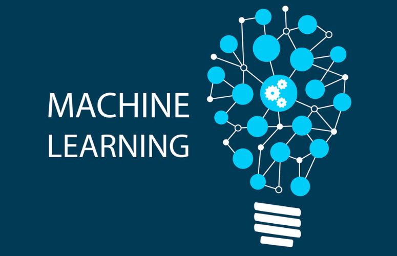

IT professionals often have little or no experience working with embedded systems, sensor networks, actuators, real-time systems, and other components that are common to IoT, so this course provides a foundation for understanding how these components work with other systems that IT professionals typically have more experience working with—such as networks, cloud computing, and applications running on servers, desktop computers, and mobile devices.
In this course, you will learn general strategies for planning, designing, developing, implementing, and maintaining an IoT system through various case studies and by assembling and configuring an IoT device to work in a sensor network. You will create an IoT device based on an ESP8266 microcontroller, implementing various common IoT features, such as analog and digital sensors, a web-based interface, MQTT messaging, and data encryption
In this course, you will learn how to apply Internet of Things technologies to solve real-world problems.
You will:
This course is designed for IT professionals with baseline skills in computer hardware, software support, and development
who want to learn how to design, develop, implement, operate, and manage Internet of Things devices and related systems.
It is for those interested in learning more about embedded systems, microcontroller programming, IoT security, and the
development life cycle for IoT projects.
While students will gain hands-on experience assembling a prototype IoT device and using software development tools,
these activities are closely guided, so previous experience in electronics assembly and programming are not required.
This course prepares students for taking the CertNexus Certified Internet of Things (IoT) Practitioner (Exam ITP-110).
| Related Course | |
|---|---|
 Big Data on AWS Big Data on AWS
|
 Machine Learning: Fundamental |
Ojo Contact148, Olojo Drive High Taste B/Stop, EIIT/FCMB Building, Ojo, Lagos State. |
Satelite Town ContactNo 1 Community Road Abulado Satelite Town, Lagos State. |
Lekki ContactNo 9, Otunba Adedoyin Ogungbe Crescent, Opposite ELIM Motors LekkiPhase 1, Lagos State. |